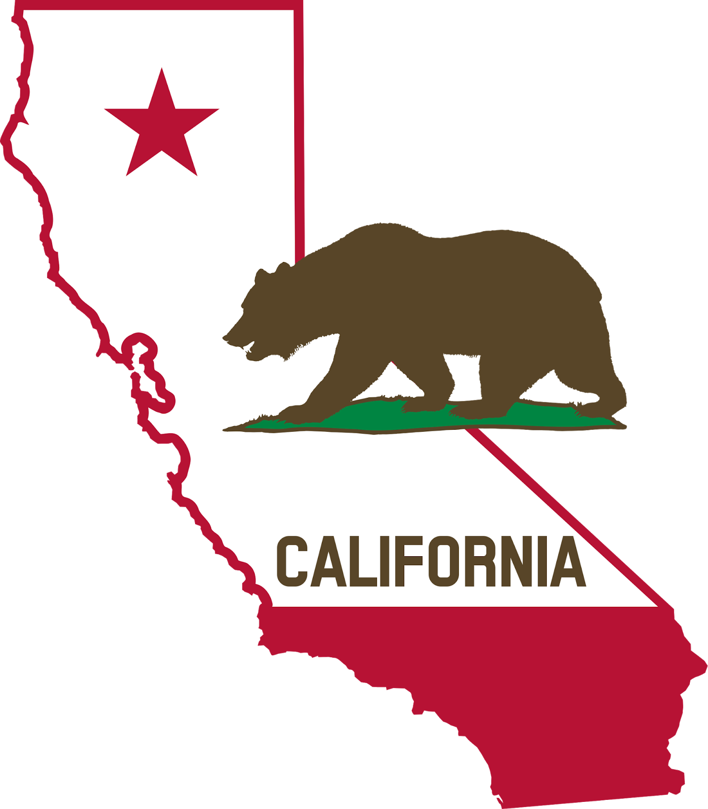
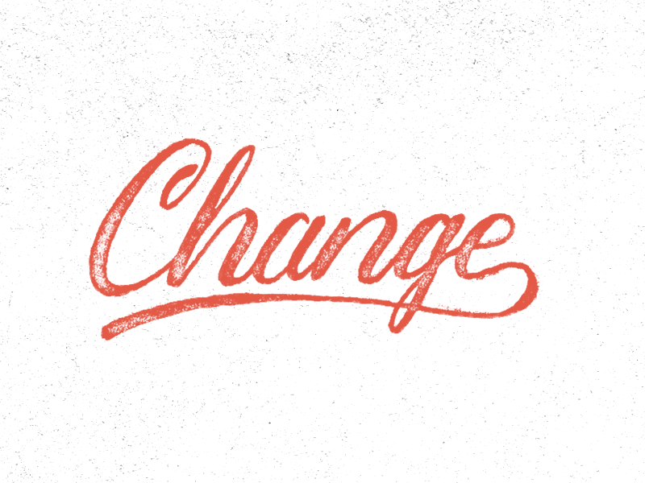
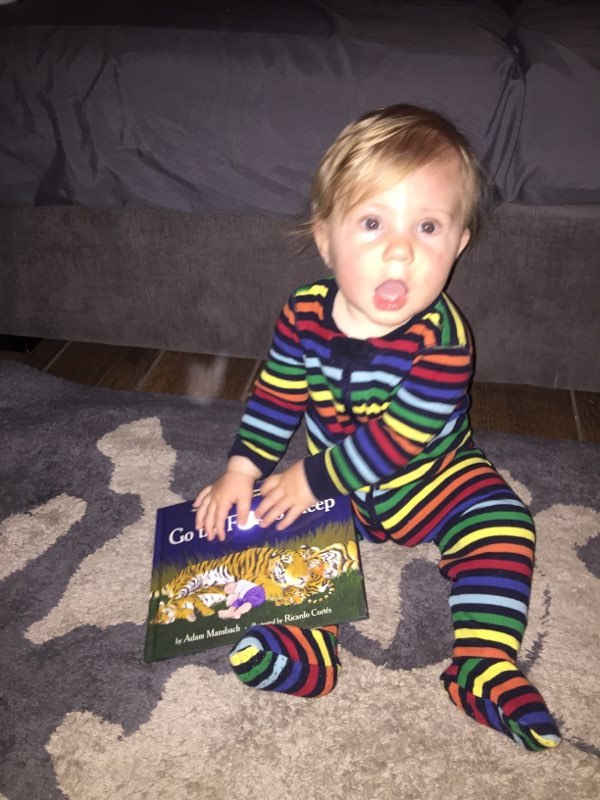

The Great Migration
Lessons learned from the Statewide LSP Vanguard Phase.
Jeffrey Sabol
slides available at http://www.thegreatmigration.org/

IS...
Questions?

How to find me
Email: jsabol@lbcc.edu
Phone: (562) 938-4232
slides available at http://www.thegreatmigration.org/